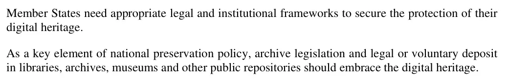

Beweisstück · Charta
UNESCO-Charta zur Bewahrung des digitalen Kulturerbes, 17. Oktober 2003
Die Passage
„Die Mitgliedstaaten benötigen geeignete rechtliche und institutionelle Rahmenbedingungen, um den Schutz ihres digitalen Kulturerbes sicherzustellen. Als Schlüsselelement nationaler Bewahrungspolitik sollten die Archivgesetzgebung und die gesetzliche oder freiwillige Ablieferung an Bibliotheken, Archive, Museen und andere öffentliche Aufbewahrungsstellen das digitale Kulturerbe einbeziehen.“ Artikel 8, Schutz des digitalen Kulturerbes, die beiden einleitenden Absätze auf der gedruckten Seite 3 (Seite 4 des fünfseitigen PDFs). Die beiden Absätze sind hier zusammengeführt. Aus dem Englischen übersetzt; der Originaltext steht unten.
Originaltext
“Member States need appropriate legal and institutional frameworks to secure the protection of their digital heritage. As a key element of national preservation policy, archive legislation and legal or voluntary deposit in libraries, archives, museums and other public repositories should embrace the digital heritage.” Das Dokument ist auf Englisch verfasst.

Warum dieses Dokument wichtig ist
Die UNESCO-Charta zählt Webseiten zum digitalen Kulturerbe und fordert die Mitgliedstaaten auf, die Archivgesetzgebung und die gesetzliche oder freiwillige Ablieferung an Bibliotheken, Archive und Museen auf dieses Erbe auszudehnen. Sie fügt hinzu, dass rechtliche und technische Rahmenbedingungen für die Authentizität entscheidend sind, um Manipulationen oder die vorsätzliche Veränderung des digitalen Kulturerbes zu verhindern. Der Essay legt dar, dass die Nationalbibliothek KB diese Website im Juni 2026 im Einklang mit dieser Charta für die Aufnahme in ihre Web-Sammlung auswählte und dass die Website ab dem 12. Juli 2026 außerhalb der Reichweite des Autors im Depot niederländischer Publikationen archiviert wurde.
Herkunft
- Dokument
- UNESCO-Rundschreiben CL/3865, fünf Seiten; Seite 1 ist das Begleitschreiben, die Charta selbst umfasst die Seiten 2 bis 5
- Titel
- Charter on the Preservation of the Digital Heritage
- Angenommen
- Auf der 32. Tagung der Generalkonferenz der UNESCO; dieses Dokument nennt den 17. Oktober 2003, sowohl im Begleitschreiben als auch in Fußnote 1 zur Charta
- Absender
- Koïchiro Matsuura, Generaldirektor der UNESCO, 7 place de Fontenoy, 75352 Paris 07 SP, Frankreich
- Empfänger
- Die für die Beziehungen zur UNESCO zuständigen Minister
- Abschrift an
- Ständige Vertretungen bei der UNESCO und nationale UNESCO-Kommissionen
- Datum
- 16. Januar 2009, das Datum des begleitenden Rundschreibens
- Geschäftszeichen
- CL/3865
- Betreff
- Übermittlung der Charta sowie eine Konsultation der Mitgliedstaaten nach den ersten sechs Jahren der Umsetzung zur Frage, ob ein weiteres normsetzendes Instrument erforderlich ist
- Sprache
- Englisch
- Fundstelle
- UNESCO Digital Library (UNESDOC), Katalogeintrag 179529, Datei 179529eng.pdf, 5 S., Erscheinungsjahr 2009, Dokumenttyp Rundschreiben
- Webadresse
- unesdoc.
unesco. org/ ark:/ 48223/ pf0000179529
Zitiert in: dem Essay „Das Verbot fiel, das Buch hielt stand“ im Kapitel (9) „Für immer festgehalten“.
Beweiskarte: https://
Dokument: https://
Abgerufen am 3. Oktober 2026.

Diese Seite ist ein Beweisstück zum Buch Der Cover-up-General von Edwin Giltay und zur dazugehörigen Website.